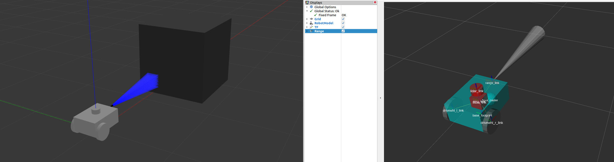
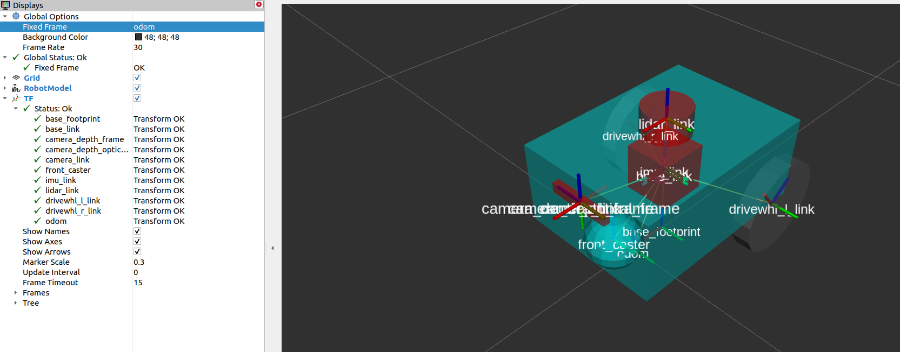

设置传感器 [待校准@1775]
在本指南中，我们将讨论传感器在机器人安全导航中的重要性以及如何使用 Nav2 设置传感器。在本教程的前半部分，我们将简要介绍 Nav2 中常用的传感器和常见的传感器消息。接下来，我们将在我们之前构建的模拟机器人 sam_bot 上添加一个基本的传感器设置。最后，我们将通过在 RViz 中可视化它们来验证 sam_bot 的模拟传感器消息。 [校准@songhuangong]
一旦在机器人上安装了传感器，它们的读数就可以用于地图绘制、定位和感知任务。在本指南的后半部分，我们将首先讨论映射和定位如何使用传感器数据。然后，我们还将看一下 Nav2 的软件包之一
传感器介绍 [待校准@1778]
移动机器人配备了大量传感器，可以让它们看到和感知周围的环境。这些传感器获取的信息可用于构建和维护环境地图，在地图上定位机器人，并查看环境中的障碍物。这些任务对于在动态环境中安全有效地导航机器人至关重要。 [校准@songhuangong]
常用传感器的示例有激光雷达、雷达、RGB 摄像头、深度摄像头、IMU 和 GPS。为了标准化这些传感器的消息格式并允许供应商之间更轻松的互操作，ROS 提供了定义通用传感器接口的 sensor_msgs 包。这也允许用户使用任何传感器供应商，只要它遵循 sensor_msgs 中的标准格式。在下一小节中，我们将介绍一些导航中常用的消息，即 sensor_msgs/LaserScan 、 sensor_msgs/PointCloud2 、 sensor_msgs/Range 和 sensor_msgs/Image 。 [校准@songhuangong]
除了 sensor_msgs 包之外，还有你应该知道 radar_msgs 和 vision_msgs 标准接口。 radar_msgs 定义了雷达特定传感器的消息，而 vision_msgs 包定义了计算机视觉中使用的消息，例如对象检测、分割和其他机器学习模型。此软件包支持的消息是 vision_msgs/Classification2D 、vision_msgs/Classification3D 、vision_msgs/Detection2D 和 vision_msgs/Detection3D 等等。 [校准@songhuangong]
参见
有关更多信息，请参阅 sensor_msgs , radar_msgs , and vision_msgs 的API文档。 [校准@songhuangong]
你的物理机器人的传感器可能已经为他们编写了ROS驱动程序 (例如g.一个ROS节点，连接到传感器，将数据填充到消息中，并将其发布给机器人使用)，该节点遵循 sensor_msgs 包中的标准接口。 sensor_msgs 包装使您可以轻松使用来自不同制造商的许多不同传感器。像Nav2这样的通用软件包可以阅读这些标准化的信息，并独立于传感器硬件执行任务。在像 sam_bot 这样的模拟机器人上，Gazebo有传感器插件，它们也按照 sensor_msgs 包发布信息。 [待校准@1783]
常见传感器信息 [待校准@1784]
在本节中，我们讨论一些在用Nav2时遇到的一些常见的 sensor_msgs 。我们将提供每个传感器的简要描述和Gazebo中模拟它的图像以及在RViz中传感器读数的相应可视化。 [校准@7dawn]
备注
除了下面列出的，还有其他类型的 sensor_msgs 。消息的完整列表及其定义可以在 sensor_msgs documentation 中找到。 [待校准@1786]
sensor_msgs/LaserScan
此消息表示来自平面激光测距仪的单个扫描。该信息在 slam_toolbox 和 nav2_amcl 中用于定位和绘图，或在 nav2_costmap_2d 中用于感知。 [待校准@1788]
sensor_msgs/PointCloud2 [待校准@1789]
此消息拥有收集3D点，加上可选额外信息点。这可以从3D lidar，2D lidar，深度相机或多。 [待校准@1790]

传感器 _ 消息/范围 [待校准@1791]
这是一个来自主动游侠的单一范围读数，它释放能量并报告一个在测量距离沿弧线有效的范围读数。声纳、红外传感仪或1D测距仪是使用此信息的传感器的示例。 [待校准@1792]
sensor_msgs/图像 [待校准@1793]
这表示来自RGB或深度相机的传感器读数，对应于RGB或范围值。 [待校准@1794]

使用Gazebo模拟传感器 [待校准@1795]
为了让您更好地掌握如何在模拟机器人上设置传感器，我们将重构之前的教程，并将传感器连接到我们的模拟机器人 sam_bot 上。与之前的教程类似，我们使用Gazebo插件向 sam_bot 添加里程计传感器，我们将使用Gazebo插件在 sam_bot 上模拟激光雷达传感器和深度相机。如果你正在使用一个真正的机器人，你的URDF框架设置中仍然需要这些步骤中的大部分。而且添加Gazebo插件以备后用也没什么坏处。 [校准@7dawn]
为了能够遵循本节的其余部分，请确保您已正确安装Gazebo。您可以按照上一教程的 Setup and Prerequisites 中的说明设置Gazebo。 [待校准@1797]
将 Gazebo 插件添加到 URDF [校准@songhuangong]
让我们首先添加lidar传感器 sam_bot 。打开URDF文件， src/description/sam_bot_description.urdf 和粘贴以下行之前 </robot> 标签。 [待校准@1798]
251<link name="lidar_link">
252 <inertial>
253 <origin xyz="0 0 0" rpy="0 0 0"/>
254 <mass value="0.125"/>
255 <inertia ixx="0.001" ixy="0" ixz="0" iyy="0.001" iyz="0" izz="0.001" />
256 </inertial>
257
258 <collision>
259 <origin xyz="0 0 0" rpy="0 0 0"/>
260 <geometry>
261 <cylinder radius="0.0508" length="0.055"/>
262 </geometry>
263 </collision>
264
265 <visual>
266 <origin xyz="0 0 0" rpy="0 0 0"/>
267 <geometry>
268 <cylinder radius="0.0508" length="0.055"/>
269 </geometry>
270 </visual>
271</link>
272
273<joint name="lidar_joint" type="fixed">
274 <parent link="base_link"/>
275 <child link="lidar_link"/>
276 <origin xyz="0 0 0.12" rpy="0 0 0"/>
277</joint>
278
279<gazebo reference="lidar_link">
280 <sensor name="lidar" type="ray">
281 <always_on>true</always_on>
282 <visualize>true</visualize>
283 <update_rate>5</update_rate>
284 <ray>
285 <scan>
286 <horizontal>
287 <samples>360</samples>
288 <resolution>1.000000</resolution>
289 <min_angle>0.000000</min_angle>
290 <max_angle>6.280000</max_angle>
291 </horizontal>
292 </scan>
293 <range>
294 <min>0.120000</min>
295 <max>3.5</max>
296 <resolution>0.015000</resolution>
297 </range>
298 <noise>
299 <type>gaussian</type>
300 <mean>0.0</mean>
301 <stddev>0.01</stddev>
302 </noise>
303 </ray>
304 <plugin name="scan" filename="libgazebo_ros_ray_sensor.so">
305 <ros>
306 <remapping>~/out:=scan</remapping>
307 </ros>
308 <output_type>sensor_msgs/LaserScan</output_type>
309 <frame_name>lidar_link</frame_name>
310 </plugin>
311 </sensor>
312</gazebo>
上述代码片段中，我们创建 lidar_link 将引用 gazebo_ros_ray_sensor 插件位置附加传感器。我们也值模拟激光雷达的扫描范围属性。最后，我们设置 /scan 作为主题，它会发布 sensor_msgs/LaserScan 消息。 [待校准@1799]
接下来，让我们添加深度相机 sam_bot 。粘贴以下行后 </gazebo> 标记lidar传感器。 [待校准@1800]
314<link name="camera_link">
315 <visual>
316 <origin xyz="0 0 0" rpy="0 0 0"/>
317 <geometry>
318 <box size="0.015 0.130 0.022"/>
319 </geometry>
320 </visual>
321
322 <collision>
323 <origin xyz="0 0 0" rpy="0 0 0"/>
324 <geometry>
325 <box size="0.015 0.130 0.022"/>
326 </geometry>
327 </collision>
328
329 <inertial>
330 <origin xyz="0 0 0" rpy="0 0 0"/>
331 <mass value="0.035"/>
332 <inertia ixx="0.001" ixy="0" ixz="0" iyy="0.001" iyz="0" izz="0.001" />
333 </inertial>
334</link>
335
336<joint name="camera_joint" type="fixed">
337 <parent link="base_link"/>
338 <child link="camera_link"/>
339 <origin xyz="0.215 0 0.05" rpy="0 0 0"/>
340</joint>
341
342<link name="camera_depth_frame"/>
343
344<joint name="camera_depth_joint" type="fixed">
345 <origin xyz="0 0 0" rpy="${-pi/2} 0 ${-pi/2}"/>
346 <parent link="camera_link"/>
347 <child link="camera_depth_frame"/>
348</joint>
349
350<gazebo reference="camera_link">
351 <sensor name="depth_camera" type="depth">
352 <visualize>true</visualize>
353 <update_rate>30.0</update_rate>
354 <camera name="camera">
355 <horizontal_fov>1.047198</horizontal_fov>
356 <image>
357 <width>640</width>
358 <height>480</height>
359 <format>R8G8B8</format>
360 </image>
361 <clip>
362 <near>0.05</near>
363 <far>3</far>
364 </clip>
365 </camera>
366 <plugin name="depth_camera_controller" filename="libgazebo_ros_camera.so">
367 <baseline>0.2</baseline>
368 <alwaysOn>true</alwaysOn>
369 <updateRate>0.0</updateRate>
370 <frame_name>camera_depth_frame</frame_name>
371 <pointCloudCutoff>0.5</pointCloudCutoff>
372 <pointCloudCutoffMax>3.0</pointCloudCutoffMax>
373 <distortionK1>0</distortionK1>
374 <distortionK2>0</distortionK2>
375 <distortionK3>0</distortionK3>
376 <distortionT1>0</distortionT1>
377 <distortionT2>0</distortionT2>
378 <CxPrime>0</CxPrime>
379 <Cx>0</Cx>
380 <Cy>0</Cy>
381 <focalLength>0</focalLength>
382 <hackBaseline>0</hackBaseline>
383 </plugin>
384 </sensor>
385</gazebo>
与激光雷达传感器类似，我们创建了 camera_link ，它将被 gazebo_ros_camera 插件引用为传感器附件位置。我们还创建了一个附在 camera_link 上的 camera_depth_frame ，并将被设置为深度相机插件的 <frame_name> 。我们也配置插件，它将发布 sensor_msgs/Image 和 sensor_msgs/PointCloud2 消息 /depth_camera/image_raw 和 /depth_camera/points 主题分别。最后，我们还为深度相机设置了其他基本配置属性。 [待校准@1801]
启动和构建文件 [校准@songhuangong]
为了验证传感器是否设置正确，以及它们是否能在我们的环境中看到物体，让我们在有障碍物的Gazebo世界里启动 sam_bot 。让我们在Gazebo世界里， sam_bot 的传感器感知范围内创建一个立方体和一个球体，以此来验证传感器是否能正确感知到物体。 [校准@greg]
为了创建这个世界，需要在你项目的根目录下创建 world``文件夹，并在此文件夹里创建 ``my_world.sdf``文件。然后复制 `world/my_world.sdf <https://github.com/ros-planning/navigation2_tutorials/blob/master/sam_bot_description/world/my_world.sdf>`_ 的内容并将其粘贴在 ``my_world.sdf 内。 [校准@greg]
现在，让我们编辑我们的启动文件， launch/display.launch.py ，用我们刚刚创造的世界来启动Gazebo。首先，通过在 generate_launch_description() 内增加以下几行来添加 my_world.sdf 的路径: [校准@greg]
world_path=os.path.join(pkg_share, 'world/my_world.sdf'),
最后，在 “启动.操作.执行进程 (cmd =['gazebo'，...” 行中添加世界路径，如下所示。 [待校准@1805]
launch.actions.ExecuteProcess(cmd=['gazebo', '--verbose', '-s', 'libgazebo_ros_init.so', '-s', 'libgazebo_ros_factory.so', world_path], output='screen'),
我们也必须添加 world 目录我们 CMakeLists.txt 文件。打开 CmakeLists.txt 和附加 world 目录安装 (目录...)，下面的代码段。 [待校准@1806]
install(
DIRECTORY src launch rviz config world
DESTINATION share/${PROJECT_NAME}
)
构建、运行和验证
我们现在可以构建和运行我们的项目。导航到项目的根目录并执行以下几行: [待校准@1807]
colcon build
. install/setup.bash
ros2 launch sam_bot_description display.launch.py
这个RViz和Gazebo将启动 sam_bot 中。在Gazebo窗口，我们创造的世界应该被启动， sam_bot 应该在那个世界诞生。你现在应该可以用360激光雷达传感器和深度相机观察 sam_bot ，如下图所示。 [待校准@1808]

在RViz窗口中，我们可以验证我们是否对传感器进行了正确的建模，以及新添加的传感器的转换是否正确: [待校准@1809]
最后，我们还可以可视化RViz中的传感器读数。可视化 sensor_msgs/LaserScan 消息发表 /scan 主题，单击添加按钮底部的RViz窗户。然后转到 By topic 选项卡，选择 /scan 下的 LaserScan 选项，如下所示。 [待校准@1810]
{kind=link}
接下来，将RViz中的 Reliability Policy 设置为 Best Effort ，并将 size 设置为0.1，以更清楚地看到要点。你应该看到如下所示的可视化 LaserScan 检测。这与我们添加到Gazebo世界中的检测到的立方体和球体相对应。 [待校准@1811]
要可视化 sensor_msgs/Image 和 sensor_msgs/PointCloud2 ，分别对主题 /depth_camera/image_raw 和 /depth_camera/points 做同样的事情: [待校准@1812]
在RViz中加入 /depth_camera/image_raw 主题后，将RViz中的 Reliability Policy 设置为 Best Effort 。然后，您应该在RViz窗口左下角的图像窗口中看到立方体，如下所示。 [待校准@1813]
你也应该看到 sensor_msgs/PointCloud2 ，如下所示。 [待校准@1814]

建图和定位 [待校准@1815]
现在我们有了一个设置了传感器的机器人，我们可以使用获得的传感器信息来构建环境地图并在地图上定位机器人。 slam_toolbox 软件包是一组工具和功能，用于在具有ros2的潜在大规模地图中进行2D同时定位和映射 (SLAM)。它也是Nav2官方支持的SLAM库之一，我们建议在需要在机器人设置中使用SLAM的情况下使用此软件包。除了 slam_toolbox ，本地化也可以通过 nav2_amcl 包来实现。这个包实现了自适应蒙特查理定位 (AMCL)，它估计机器人在地图中的位置和方向。也可以使用其他技术，请查看Nav2文档以获取更多信息。 [待校准@1816]
模块 slam_toolbox 和 nav2_amcl 都使用来自激光扫描传感器的信息，以便能够感知机器人的环境。因此，为了验证他们可以访问激光扫描传感器读数，我们必须确保他们订阅了发布 sensor_msgs/LaserScan 信息的正确主题。这可以通过将它们的 scan_topic 参数设置为发布该消息的主题来配置。将 sensor_msgs/LaserScan 信息发布到 /scan 主题是一项惯例。因此，默认情况下， scan_topic 参数设置为 /scan 。回想一下，当我们在上一节中将激光雷达传感器添加到 sam_bot 时，我们将激光雷达传感器发布 sensor_msgs/LaserScan 信息的主题设置为 /scan 。 [待校准@1817]
关于完整配置参数的深入讨论将不在我们的教程范围内，因为它们可能非常复杂。相反，我们建议您在下面的链接中查看他们的官方文档。 [待校准@1818]
参见
你也可以参考 (SLAM) Navigating While Mapping guide 的教程如何使用带有SLAM的Nav2。你可以验证 是否``slam_toolbox`` 和 nav2_amcl 已正确设置可视化地图和机器人姿态在RViz，如上节所示。 [校准@7dawn]
2D代价地图 [待校准@1822]
Costmap 2D包利用传感器信息以占用网格的形式提供机器人环境的表示。占用网格中的单元格存储的成本值在0-254之间，这表示通过这些区域的值。0的值意味着单元格是空缺的，而254的成本意味着单元格被完全占用。这些极端之间的值被导航算法用来引导你的机器人远离作为潜在场的障碍。Nav2中的代价地图通过 nav2_costmap_2d 包实施。 [校准@7dawn]
Costmap实施包括多层，每个具有一定功能有助于细胞整体费用。包包括以下层，但基于插件允许定制和新图层使用: 静态层，充气层，层，障碍层，和体素层。静态层表示地图的costmap，获得消息发布到 /map 主题像产生SLAM。障碍层包括对象检测传感器发布或的 LaserScan 和 PointCloud2 消息。体素层类似障碍层，它可以使用或的 LaserScan 和 PointCloud2 传感器信息处理3D数据。范围层允许列入信息提供声纳和红外传感器。最后，充气层代表成本价值观致命障碍我们机器人避免导航障碍由于机器人的几何。在接下来的这一部分教程，我们将讨论基本配置的不同层 nav2_costmap_2d 。 [待校准@1824]
如果启用了膨胀层，则通过插件界面将这些层集成到costmap中，然后使用用户指定的 inflation radius 进行膨胀。要更深入地讨论成本图的概念，你可以看看 ROS1 costmap_2D documentation 。请注意， nav2_costmap_2d 包主要是ROS1导航堆栈版本的简单的ROS2端口，需要对ROS2支持和一些新的层插件进行较小的更改。 [待校准@1825]
构建、运行和验证
我们将首先推出 display.launch.py ，在我们的URDF中推出提供 base_link => sensors 转化的robot state publisher。它还发起Gazebo作为物理模拟器也提供 odom => base_link 从差动驱动插件，我们添加到 sam_bot 前指南， Simulating an Odometry System Using Gazebo 。它还启动了RViz，我们可以用它来可视化机器人和传感器信息。 [待校准@1838]
然后我们将推出 slam_toolbox ，发布到 /map 主题，并提供 map => odom 变换。回想一下， map => odom 转化是Nav2系统的主要要求之一。然后，在 /map 主题上发布的消息将被 global_costmap 的静态层使用。 [待校准@1839]
在我们正确设置了机器人描述、里程计传感器和必要的转换后，我们将最终启动Nav2系统本身。目前，我们将只探索Nav2的costmap生成系统。推出Nav2后，我们将可视化RViz的成本图，以确认我们的输出。 [待校准@1840]
发射描述节点，RViz和Gazebo [待校准@1841]
现在让我们通过发射文件 display.launch.py 发射我们的机器人描述节点，RViz和Gazebo。打开一个新的终端并执行下面的行。 [待校准@1842]
colcon build
. install/setup.bash
ros2 launch sam_bot_description display.launch.py
这个RViz和Gazebo现在应该在 sam_bot 都存在的情况下发射。回想一下， base_link => sensors 变换现在由 robot_state_publisher 发布， odom => base_link 变换由我们的Gazebo插件发布。两个转换现在都应该在这个RViz中显示没有错误。 [待校准@1843]
发射slam_toolbox [待校准@1844]
为了能够启动 slam_toolbox ，请通过执行以下命令确保已安装 slam_toolbox 包: [待校准@1845]
sudo apt install ros-<ros2-distro>-slam-toolbox
我们将启动 async_slam_toolbox_node 的 slam_toolbox 使用包的内置启动文件。打开一个新终端，然后执行以下几行: [待校准@1846]
ros2 launch slam_toolbox online_async_launch.py
这个 slam_toolbox 现在应该会发布 /map 主题，并提供 map => odom 变换。 [校准@7dawn]
我们可以在RViz中证实 /map 主题正在发表。在 “RViz” 窗口中，单击左下角的 “添加” 按钮，然后转到 “ By topic ” 选项卡，然后在 “ /map ” 主题下选择 “ Map ”。如下图所示，你应该能够可视化在 /map 中收到的信息。 [待校准@1848]

我们还可以通过在新终端中执行以下行来检查转换是否正确: [待校准@1849]
ros2 run tf2_tools view_frames.py
线以上将创建 frames.pdf 文件显示当前变换树。你变换树应该如下图所示: [待校准@1850]
在RViz中可视化代价地图 [待校准@1856]
检测到的障碍物的 global_costmap 、 local_costmap 和体素表示可以在RViz中可视化。 [待校准@1857]
要可视化RViz中的 global_costmap ，请单击 “RViz” 窗口左下角的 “添加” 按钮。转到 By topic 标签，然后在 /global_costmap/costmap 主题下选择 Map 。 global_costmap 应该显示在RViz窗口，如下所示。当我们的机器人在Gazebo中导航我们的模拟世界时， global_costmap 显示出我们的机器人应该避免的区域 (黑色)。 [待校准@1858]
可视化 local_costmap 在RViz，选择 Map 下 /local_costmap/costmap 主题。设置 color scheme 在RViz转 costmap 看上去类似于下图。 [待校准@1859]
要可视化检测到的对象的体素表示，请打开一个新终端并执行以下行: [待校准@1860]
ros2 run nav2_costmap_2d nav2_costmap_2d_markers voxel_grid:=/local_costmap/voxel_grid visualization_marker:=/my_marker
上面一行设置了标记将被发布到 /my_marker 的主题。要查看RViz标记物，请在 /my_marker 主题下选择 Marker ，如下所示。 [待校准@1861]
{kind=link}
然后将RViz中的 fixed frame 设置为 odom ，你现在应该会看到RViz中的体素，它代表了我们在Gazebo世界中拥有的立方体和球体: [待校准@1862]
小结 [校准@songhuangong]
在机器人安装指南的这一部分，我们已经讨论了传感器信息对于与Nav2相关的不同任务的重要性。更具体地说，诸如映射 (SLAM) 、定位 (AMCL) 和感知 (成本图) 等任务。 [待校准@1863]
我们还讨论了Nav2中常见类型的传感器信息，它为不同的传感器供应商标准化了信息格式。我们还讨论了如何使用Gazebo向模拟机器人添加传感器，以及如何通过RViz验证传感器是否正常工作。 [待校准@1864]
最后，我们使用不同的层为 nav2_costmap_2d 包设置了一个基本配置，以生成全局和局部成本图。然后，我们通过在RViz中可视化这些成本图来验证我们的工作。 [待校准@1865]